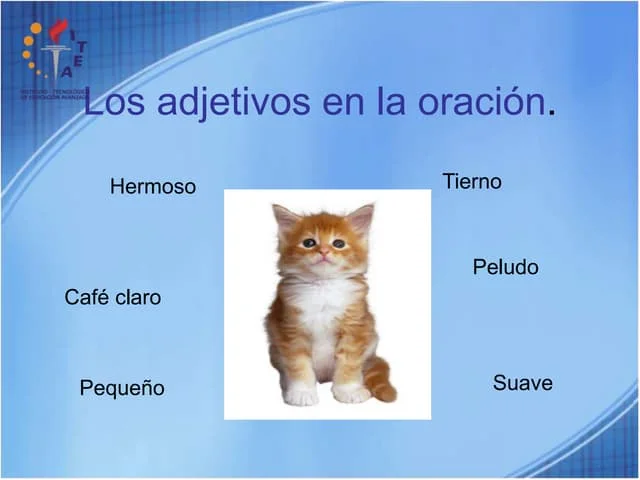

Adjetivo
• Definición propia: Es la palabra que se pega al sustantivo para decirnos cómo es o qué características tiene, dándonos más detalles sobre él.
• Banco de palabras: Lento, inalámbrico, nuevo, seguro, táctil.
• Oración de aplicación: El sistema digital falló durante la actualización de esta mañana.
